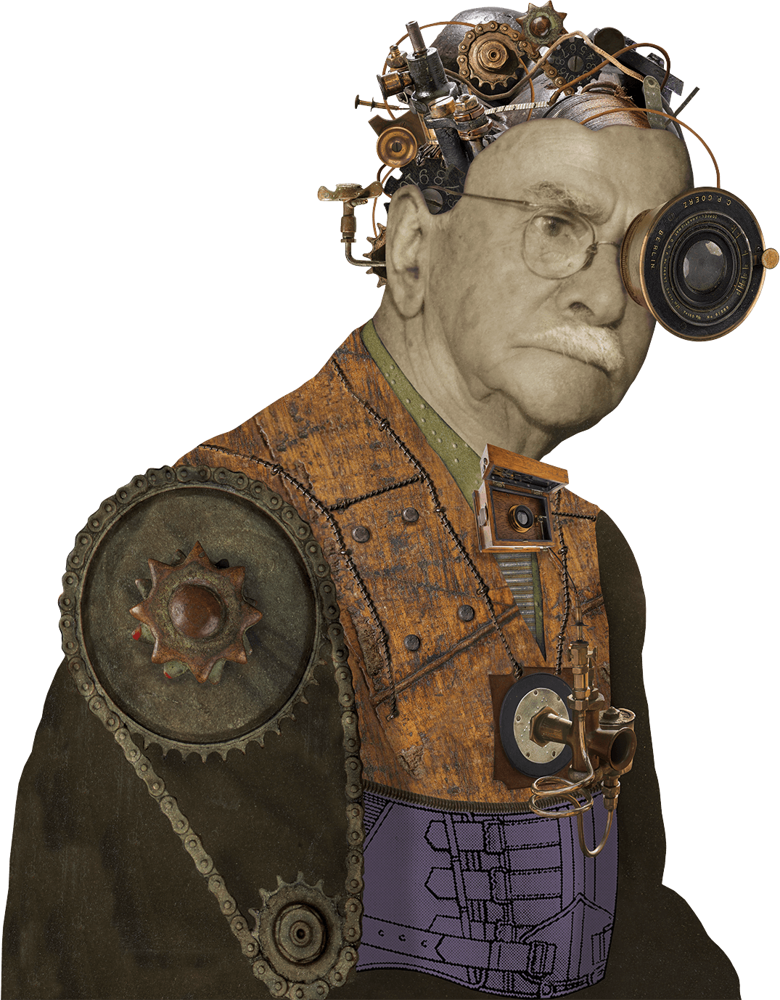
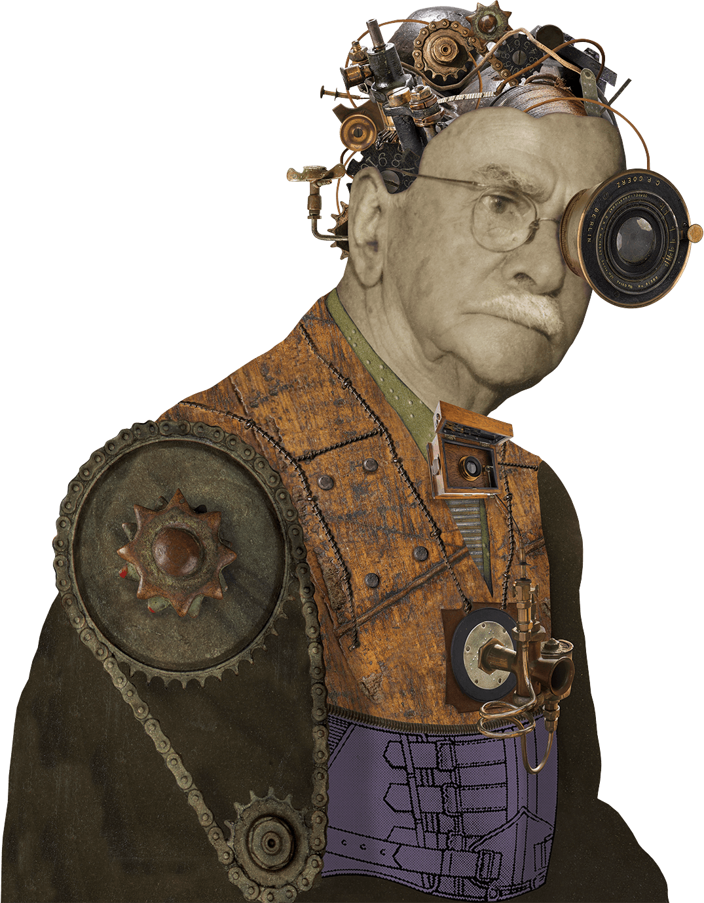

Magnificent Makers tells seven stories of canny creations, daring discoveries and imaginative inventions that trace a path through Queensland’s history since the late nineteenth century. Together, they not only help tell the story of our state, but showcase the inspiring achievements of incredible men and women who took a chance on their ideas—resourceful, trail-blazing or altruistic—and transformed them into lasting legacies.
 
